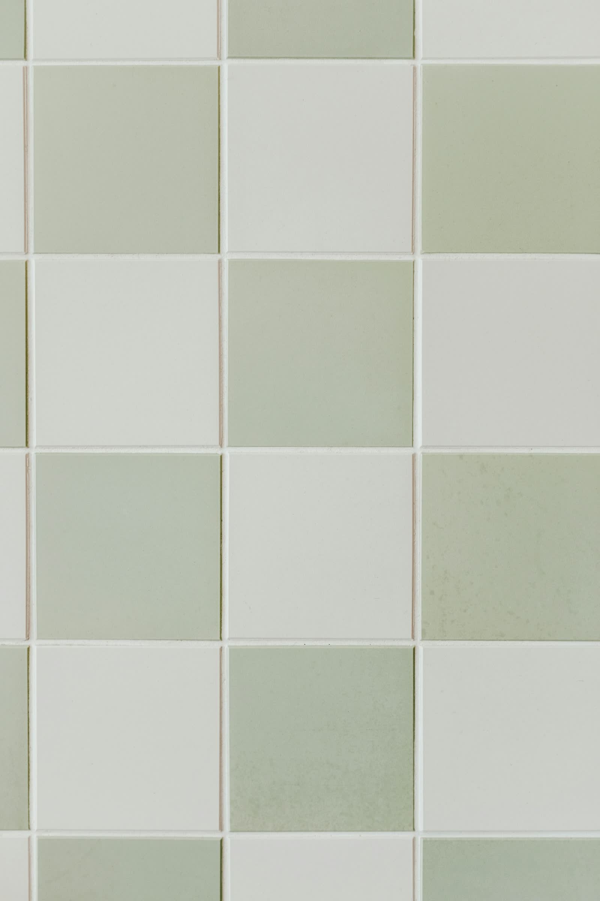
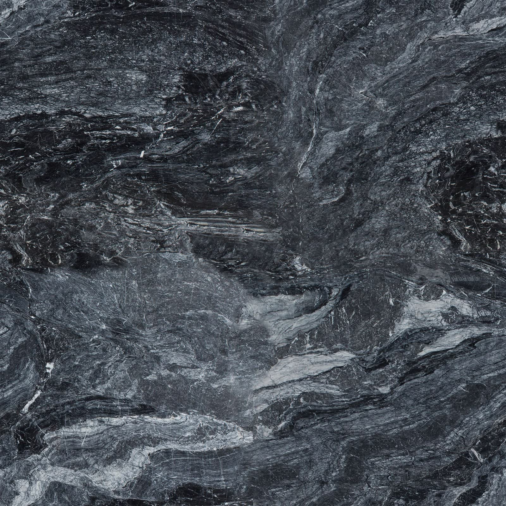

We restore the light
in your stone.
Marble, granite, tile & grout: cleaned, honed, sealed, and polished back to their first day. Owner-operated, serving Metro Atlanta from Newnan, Georgia.
Dull is not damaged.
It's waiting.
Years of cleaning products, food prep, foot traffic, and weather leave stone cloudy and grout dark. Underneath, the surface you paid for is still there. Restoration takes it back, for a fraction of the $75–$200 per square foot that replacement costs.



Each surface brightens as it enters view. That's the polish pass.
Natural stone restoration
Honing, polishing, sealing, chip and etch repair for marble, granite, travertine, and slate: countertops, floors, showers, and outdoor stone.
Explore restorationTile & grout renewal
Advanced water extraction and orbital agitation lift the years out of tile floors and grout lines without harsh chemistry.
Explore renewalCare & maintenance
Sealing schedules and care plans that keep the finish you paid for, so small habits never become replacement projects.
Explore care plansSee the pass.

Heard after the shine
"Look better now than they did when they were new."
Lisa Fisher · granite countertops · Google, five stars
"He was able to counter the problem and restore the shower to its former glory."
David Langston · travertine shower · Google, five stars
"…made our 50 yr old slate foyer floor look new again!"
M. Ayers · slate foyer · Google, five stars

Your free estimate awaits.
No obligations. No pressure. If your stone doesn't need work, we'll tell you so. That's the whole risk.